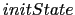

Next: CONCLUSIÓN Up: DISEÑO DE PROCESOS E-LEARNING Previous: Diseño de Transacciones e-learning
Existen diferentes formas de representación de los contratos definidos en la sección 2, la herramienta CED (Coordination Development Environment)  los implementa a través de un lenguaje llamado Oblog [10]. En [14] se muestra como a través de CommUnity se definen primitivas de modelado y técnicas de diseño basadas en la separación de la "coordinación" del "cómputo".
los implementa a través de un lenguaje llamado Oblog [10]. En [14] se muestra como a través de CommUnity se definen primitivas de modelado y técnicas de diseño basadas en la separación de la "coordinación" del "cómputo".
En UWATc+ se brinda un diagrama de representación de contrato, donde se describen todos los datos que lo instancian. Cada tipo de dato y valor, pertenece a un elemento del meta-modelo de la figura 1. Teniendo en cuenta la figura 6, en primer lugar (item 1) se identifican los objetos participantes en el contrato; en el ejemplo de la figura 6 y hacen referencias a dos clases reales pertenecente a la implementación de la herramienta Foro y Usuarios de la Aplicación Obra Abierta, respectivamente. Luego, se identifican los nombres de los parámetros context-aware significativos para el contrato, alineados en la misma columna del objeto que lo comparte (item 2). En Servicios (item 3) deben ser represetados los métodos del objeto, que al ser ejecutados, provocan la intervención del contrato. Para este ejemplo  y son ejecutados cuando un usuario ingresa a la herramienta Foro y las posteriores funcionalidades (servicios) disponibles dependen de la ejecución del contrato (la figura 5 muestra la superposición del contrato entre los servicios de edición y las nuevas interfaces o funcionalidades). Las siguentes filas (items 4 y 5) se refieren a las pre y post-condiciones que se deben cumplir en la ejecución del contrato. Por último se explicitan las reglas de coordinación. Siguiendo con el ejemplo, en la parte del condicional verifica si el contexto del usuario está compuesto por la locación , tienen el perfil , es un , cumple el rol y pertenece a la categorÃa (este tipo de representación de contexto se encuentra desarrollado en [2]). En cuanto a la acción de la regla de coordinación, continuando con el mismo ejemplo, se induce la ejecución del método del objeto (DiscussionAction). El final del diagrama está dedicado a comentarios generales; cada comentario dede ir acompañado con el número de item (1,2,3,4,5 o 6) al que hace referencia.
| Contrato: Edición | ||||
| 1. | Participantes: | d:DiscussionAction | u:UserAction | |
| 2. | Param. c-a: | state, portlet, rundata, context | contextidentifier, identifier | |
| 3. | Servicios: | initState() | getIdentifier() | |
| 4. | Pre-Cond: | existe |
existe |
|
| 5. | Pos-Cond: | modifica |
||
| 6. | Reglas de Coordinación: | Si u.contexto='p1;d;r1;c1;' entonces d.showMessage(data,string) | ||
| Comentario | ||||
| 1. DiscussionAction y UserAction pertenecen a clases implementadas en JAVA del proyecto Sakai. | ||||
|
4 y 5. |
||||
| que caracterisa a los usuarios de la plataforma | ||||
Alejandro Sartorio 2010-04-11